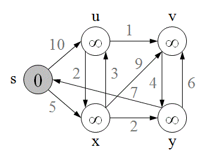
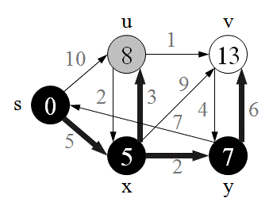
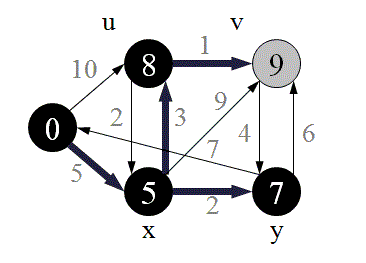
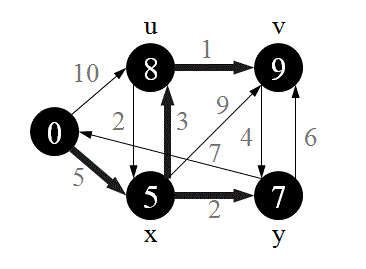

Dijkstra's Algorithm
Djikstra's algorithm (named after its discover, E.W. Dijkstra) solves the problem of finding the shortest path from a point in a graph (the source) to a destination. It turns out that one can find the shortest paths from a given source to all points in a graph in the same time, hence this problem is sometimes called the single-source shortest paths problem.
Algorithm
The basic mode of operation is:
- Initialise d and pi
- Set S to empty
-
While there are still vertices in V-S
- Sort the vertices in V-S according to the current best estimate of their distance from the source
- Add u, the closest vertex in V-S, to S
- Relax all the vertices still in V-S connected to u

Example
|  |
Initial graph All nodes have infinite cost except the source |
|
Choose the closest node to s. As we initialised d[s] to 0, it's s. Add it to S Relax all nodes adjacent to s. Update predecessor for all nodes updated. |
|
|
Choose the closest node, x Relax all nodes adjacent to x Update predecessors for u, v and y. |
|
|  |
Now y is the closest, add it to S. Relax v and adjust its predecessor. |
|  | u is now closest, choose it and adjust its neighbour, v. |
|  |
Finally, add v. The predecessor list now defines the shortest path from each node to s. |
Pseudo Code
Dijkstra(G, w, s)
for each vertex v in V[G]
d[v] = INF
pi[v] = NIL
d[s] = 0
Set.clear()
Queue.push(V[G])
while Queue.empty()=false
u = Queue.extract_min()
Set.insert(u)
for each vertext v in Adj[u]
if d[v]>d[u]+w(u,v)
d[v] = d[u]+w(u,v)
pi[v] = u
Time Complexity
The time complexity can be expressed as O(|E|+|V|log|V|).